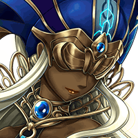

ミーファ
そ、そんな……倒したと思ったのに。 まだこんな力を残していたなんて……。
ミーファ
クランツさんたちから 託された報告書も届けられず、
？？？
どんな時も、 最後まで諦めるなと教えたはずだぞ！！
？？？
そうね…。元気だけが取り柄の君が 諦めるなんて、らしくないわよ。
？？？
まだこんなところにいたのかよ。 追いついちまったじゃねーか！！
？？？
なに言ってんの！私たちが アイツを取り逃がしたせいじゃないのよ！！
？？？
さあ、立ってミーファくん。 任務は終わってないはずよ。
？？？
ミーファ、 つらい役目をさせてすまなかったな…。
？？？
だが、もう大丈夫だ！ みんなでランドールに帰ろう！！
ミーファ
みなさん、ご無事だったんですね！！ よかった……。
グリフ
俺はもちろんだし、 こいつらだって、この俺が鍛えたんだぞ。
ミーファ
な、なんですか？ 俺の方をじっと見て…。
グリフ
ん…まあ、気にするな。 ちょっとしたことだ…。
グリフ
それより、 すぐにランドールに帰還するぞ！
グリフ
一刻も早くイシュグリアの情報を 召喚院に伝えねばな！
ミーファ
ゲートらしきものは、 どこにもなかったのですが……。
ロア
出発前の会議では、グラデンスの爺さんは 確かにこの場所にあるって…。
カフカ
私も憶えている。確かに滅獄の岸壁に 帰還用ゲートがあるって言ってたわ。
グリフ
うむ……とりあえず全員で この辺りをもう一度探索するとしよう。
クランツ
やはりそれらしいものは、 どこにもないな…。
リベラ
そうね…。 私も何も見つけられなかったわ…。
ロア
こりゃ一体どーゆーことだ！ わけがわかんねーよ！！
カフカ
わけがわからないのは、 こっちも同じなんだから！！
グリフ
グラデンス召喚老たちが 嘘をついたとも思えぬ…。
グリフ
何らかのアクシデントがあったと 考えるべきだろうな……。
リベラ
それじゃあ、もしかして 私たちは帰れない…ってことですか？


アム＝ユノス
あれれ…せっかく全員集まったのに、 しんみりしちゃってるねー。
アム＝ユノス
まあ、元の世界に帰れなくなったんだから 無理もないかな。
アム＝ユノス
でも、油断しちゃダメさ。 旅はまだ終わってないんだからね。
アム＝ユノス
というか、ボクにとっては、 ここまでは準備段階。
ロア
な、なに！？ さっき倒した魔獣が蘇っただと！？
クランツ
バカな…！ 確かに手応えはあったのに…！！
グリフ
ミーファ、お前は先ほどの戦闘の負傷が 癒えていまい。下がってろ！